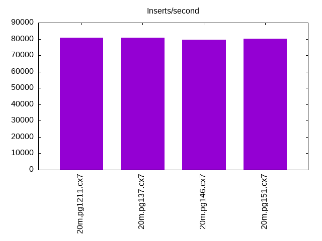

This is a report for the insert benchmark with 20M docs and 3 client(s). It is generated by scripts (bash, awk, sed) and Tufte might not be impressed. An overview of the insert benchmark is here and a short update is here. Below, by DBMS, I mean DBMS+version.config. An example is my8020.c10b40 where my means MySQL, 8020 is version 8.0.20 and c10b40 is the name for the configuration file.
The test server has 8 AMD cores, 16G RAM and an NVMe SSD. It is described here. The benchmark was run with 3 clients and there were 1 or 2 connections per client (1 for queries, 1 for inserts). The benchmark loads 20M rows without secondary indexes, creates secondary indexes, loads another 20M rows then does 3 read+write tests for one hour each that do queries as fast as possible with 100, 500 and then 1000 writes/second/client concurrent with the queries. The database is cached by the storage engine and the only IO is for writes. Clients and the DBMS share one server. The per-database configs are in the per-database subdirectories here.
The tested DBMS are:
The numbers are inserts/s for l.i0 and l.i1, indexed docs (or rows) /s for l.x and queries/s for q*.2. The values are the average rate over the entire test for inserts (IPS) and queries (QPS). The range of values for IPS and QPS is split into 3 parts: bottom 25%, middle 50%, top 25%. Values in the bottom 25% have a red background, values in the top 25% have a green background and values in the middle have no color. A gray background is used for values that can be ignored because the DBMS did not sustain the target insert rate. Red backgrounds are not used when the minimum value is within 80% of the max value.
| dbms | l.i0 | l.x | l.i1 | q100.1 | q500.1 | q1000.1 |
|---|---|---|---|---|---|---|
| 20m.pg1211.cx7 | 188679 | 558333 | 80645 | 29987 | 30302 | 30186 |
| 20m.pg137.cx7 | 190476 | 628125 | 80645 | 29386 | 29659 | 29800 |
| 20m.pg146.cx7 | 185185 | 628125 | 79681 | 29449 | 29674 | 29709 |
| 20m.pg151.cx7 | 188679 | 628125 | 80321 | 29678 | 30317 | 30226 |
This lists the average rate of inserts/s for the tests that do inserts concurrent with queries. For such tests the query rate is listed in the table above. The read+write tests are setup so that the insert rate should match the target rate every second. Cells that are not at least 95% of the target have a red background to indicate a failure to satisfy the target.
| dbms | q100.1 | q500.1 | q1000.1 |
|---|---|---|---|
| pg1211.cx7 | 300 | 1497 | 2995 |
| pg137.cx7 | 300 | 1498 | 2995 |
| pg146.cx7 | 300 | 1498 | 2995 |
| pg151.cx7 | 300 | 1498 | 2995 |
| target | 300 | 1500 | 3000 |
l.i0: load without secondary indexes. Graphs for performance per 1-second interval are here.
Average throughput:
Insert response time histogram: each cell has the percentage of responses that take <= the time in the header and max is the max response time in seconds. For the max column values in the top 25% of the range have a red background and in the bottom 25% of the range have a green background. The red background is not used when the min value is within 80% of the max value.
| dbms | 256us | 1ms | 4ms | 16ms | 64ms | 256ms | 1s | 4s | 16s | gt | max |
|---|---|---|---|---|---|---|---|---|---|---|---|
| pg1211.cx7 | 99.999 | 0.001 | 0.010 | ||||||||
| pg137.cx7 | 99.999 | 0.001 | 0.006 | ||||||||
| pg146.cx7 | 99.997 | 0.003 | 0.009 | ||||||||
| pg151.cx7 | 99.998 | 0.002 | 0.006 |
Performance metrics for the DBMS listed above. Some are normalized by throughput, others are not. Legend for results is here.
ips qps rps rmbps wps wmbps rpq rkbpq wpi wkbpi csps cpups cspq cpupq dbgb1 dbgb2 rss maxop p50 p99 tag 188679 0 0 0.0 371.8 78.1 0.000 0.000 0.002 0.424 19952 54.8 0.106 23 1.9 5.2 0.0 0.010 70724 22675 20m.pg1211.cx7 190476 0 0 0.0 383.9 80.8 0.000 0.000 0.002 0.434 21369 57.7 0.112 24 1.9 5.2 0.0 0.006 72321 24972 20m.pg137.cx7 185185 0 0 0.0 368.7 77.3 0.000 0.000 0.002 0.427 19764 55.5 0.107 24 1.9 5.2 0.0 0.009 69525 63231 20m.pg146.cx7 188679 0 0 0.0 381.2 80.1 0.000 0.000 0.002 0.435 19773 55.0 0.105 23 1.9 5.2 0.0 0.006 71322 32863 20m.pg151.cx7
l.x: create secondary indexes.
Average throughput:
Performance metrics for the DBMS listed above. Some are normalized by throughput, others are not. Legend for results is here.
ips qps rps rmbps wps wmbps rpq rkbpq wpi wkbpi csps cpups cspq cpupq dbgb1 dbgb2 rss maxop p50 p99 tag 558333 0 0 0.0 599.5 145.0 0.000 0.000 0.001 0.266 2134 29.6 0.004 4 3.7 8.6 0.0 0.004 NA NA 20m.pg1211.cx7 628125 0 0 0.0 571.9 138.5 0.000 0.000 0.001 0.226 1999 31.9 0.003 4 3.7 8.6 0.0 0.004 NA NA 20m.pg137.cx7 628125 0 0 0.0 547.9 132.6 0.000 0.000 0.001 0.216 1963 31.7 0.003 4 3.7 8.6 0.0 0.004 NA NA 20m.pg146.cx7 628125 0 0 0.0 631.6 152.8 0.000 0.000 0.001 0.249 1923 31.0 0.003 4 3.7 8.6 0.0 0.004 NA NA 20m.pg151.cx7
l.i1: continue load after secondary indexes created. Graphs for performance per 1-second interval are here.
Average throughput:
Insert response time histogram: each cell has the percentage of responses that take <= the time in the header and max is the max response time in seconds. For the max column values in the top 25% of the range have a red background and in the bottom 25% of the range have a green background. The red background is not used when the min value is within 80% of the max value.
| dbms | 256us | 1ms | 4ms | 16ms | 64ms | 256ms | 1s | 4s | 16s | gt | max |
|---|---|---|---|---|---|---|---|---|---|---|---|
| pg1211.cx7 | 99.813 | 0.053 | 0.113 | 0.021 | 0.113 | ||||||
| pg137.cx7 | 99.821 | 0.049 | 0.096 | 0.033 | 0.001 | 0.285 | |||||
| pg146.cx7 | 99.838 | 0.064 | 0.069 | 0.028 | 0.002 | 0.344 | |||||
| pg151.cx7 | 99.850 | 0.043 | 0.090 | 0.017 | 0.103 |
Performance metrics for the DBMS listed above. Some are normalized by throughput, others are not. Legend for results is here.
ips qps rps rmbps wps wmbps rpq rkbpq wpi wkbpi csps cpups cspq cpupq dbgb1 dbgb2 rss maxop p50 p99 tag 80645 0 0 0.0 581.9 124.8 0.000 0.000 0.007 1.584 18504 48.3 0.229 48 8.0 24.0 0.0 0.113 28968 4894 20m.pg1211.cx7 80645 0 0 0.0 601.0 128.3 0.000 0.000 0.007 1.630 18648 48.3 0.231 48 8.0 24.4 0.0 0.285 29128 3396 20m.pg137.cx7 79681 0 0 0.0 560.9 119.3 0.000 0.000 0.007 1.533 18215 48.9 0.229 49 8.0 24.4 0.0 0.344 28529 1548 20m.pg146.cx7 80321 0 0 0.0 565.0 119.6 0.000 0.000 0.007 1.524 18477 49.4 0.230 49 8.0 24.3 0.0 0.103 28668 4548 20m.pg151.cx7
q100.1: range queries with 100 insert/s per client. Graphs for performance per 1-second interval are here.
Average throughput:
Query response time histogram: each cell has the percentage of responses that take <= the time in the header and max is the max response time in seconds. For max values in the top 25% of the range have a red background and in the bottom 25% of the range have a green background. The red background is not used when the min value is within 80% of the max value.
| dbms | 256us | 1ms | 4ms | 16ms | 64ms | 256ms | 1s | 4s | 16s | gt | max |
|---|---|---|---|---|---|---|---|---|---|---|---|
| pg1211.cx7 | 99.963 | 0.034 | 0.003 | nonzero | 0.007 | ||||||
| pg137.cx7 | 99.961 | 0.035 | 0.004 | nonzero | 0.006 | ||||||
| pg146.cx7 | 99.954 | 0.042 | 0.004 | nonzero | 0.006 | ||||||
| pg151.cx7 | 99.964 | 0.033 | 0.003 | nonzero | 0.006 |
Insert response time histogram: each cell has the percentage of responses that take <= the time in the header and max is the max response time in seconds. For max values in the top 25% of the range have a red background and in the bottom 25% of the range have a green background. The red background is not used when the min value is within 80% of the max value.
| dbms | 256us | 1ms | 4ms | 16ms | 64ms | 256ms | 1s | 4s | 16s | gt | max |
|---|---|---|---|---|---|---|---|---|---|---|---|
| pg1211.cx7 | 99.685 | 0.315 | 0.007 | ||||||||
| pg137.cx7 | 99.194 | 0.806 | 0.008 | ||||||||
| pg146.cx7 | 99.468 | 0.532 | 0.009 | ||||||||
| pg151.cx7 | 99.648 | 0.352 | 0.008 |
Performance metrics for the DBMS listed above. Some are normalized by throughput, others are not. Legend for results is here.
ips qps rps rmbps wps wmbps rpq rkbpq wpi wkbpi csps cpups cspq cpupq dbgb1 dbgb2 rss maxop p50 p99 tag 300 29987 0 0.0 414.2 11.1 0.000 0.000 1.383 37.808 114826 38.8 3.829 104 8.3 15.7 0.0 0.007 10872 7688 20m.pg1211.cx7 300 29386 0 0.0 412.3 10.7 0.000 0.000 1.377 36.556 112524 38.7 3.829 105 8.3 15.7 0.0 0.006 10533 7671 20m.pg137.cx7 300 29449 0 0.0 390.0 10.5 0.000 0.000 1.302 35.982 112739 38.3 3.828 104 8.3 17.5 0.0 0.006 10564 7512 20m.pg146.cx7 300 29678 0 0.0 390.0 10.5 0.000 0.000 1.302 36.009 113582 38.3 3.827 103 8.3 17.5 0.0 0.006 10633 7691 20m.pg151.cx7
q500.1: range queries with 500 insert/s per client. Graphs for performance per 1-second interval are here.
Average throughput:
Query response time histogram: each cell has the percentage of responses that take <= the time in the header and max is the max response time in seconds. For max values in the top 25% of the range have a red background and in the bottom 25% of the range have a green background. The red background is not used when the min value is within 80% of the max value.
| dbms | 256us | 1ms | 4ms | 16ms | 64ms | 256ms | 1s | 4s | 16s | gt | max |
|---|---|---|---|---|---|---|---|---|---|---|---|
| pg1211.cx7 | 99.930 | 0.057 | 0.012 | 0.001 | nonzero | 0.053 | |||||
| pg137.cx7 | 99.931 | 0.058 | 0.010 | nonzero | nonzero | 0.042 | |||||
| pg146.cx7 | 99.916 | 0.069 | 0.014 | 0.001 | nonzero | 0.047 | |||||
| pg151.cx7 | 99.932 | 0.054 | 0.013 | nonzero | nonzero | 0.041 |
Insert response time histogram: each cell has the percentage of responses that take <= the time in the header and max is the max response time in seconds. For max values in the top 25% of the range have a red background and in the bottom 25% of the range have a green background. The red background is not used when the min value is within 80% of the max value.
| dbms | 256us | 1ms | 4ms | 16ms | 64ms | 256ms | 1s | 4s | 16s | gt | max |
|---|---|---|---|---|---|---|---|---|---|---|---|
| pg1211.cx7 | 96.970 | 2.926 | 0.093 | 0.011 | 0.131 | ||||||
| pg137.cx7 | 98.330 | 1.612 | 0.050 | 0.008 | 0.114 | ||||||
| pg146.cx7 | 97.314 | 2.610 | 0.066 | 0.010 | 0.109 | ||||||
| pg151.cx7 | 96.562 | 3.305 | 0.120 | 0.013 | 0.132 |
Performance metrics for the DBMS listed above. Some are normalized by throughput, others are not. Legend for results is here.
ips qps rps rmbps wps wmbps rpq rkbpq wpi wkbpi csps cpups cspq cpupq dbgb1 dbgb2 rss maxop p50 p99 tag 1497 30302 5 0.0 486.9 25.1 0.000 0.002 0.325 17.180 116096 39.6 3.831 105 10.3 16.1 0.0 0.053 10628 7799 20m.pg1211.cx7 1498 29659 5 0.0 480.0 25.0 0.000 0.002 0.321 17.108 113702 39.7 3.834 107 10.3 16.0 0.0 0.042 10296 7723 20m.pg137.cx7 1498 29674 5 0.0 520.7 23.5 0.000 0.002 0.348 16.050 113589 39.2 3.828 106 10.3 17.5 0.0 0.047 10341 7623 20m.pg146.cx7 1498 30317 5 0.0 517.5 23.4 0.000 0.002 0.345 16.027 115933 39.2 3.824 103 10.3 17.5 0.0 0.041 10549 7768 20m.pg151.cx7
q1000.1: range queries with 1000 insert/s per client. Graphs for performance per 1-second interval are here.
Average throughput:
Query response time histogram: each cell has the percentage of responses that take <= the time in the header and max is the max response time in seconds. For max values in the top 25% of the range have a red background and in the bottom 25% of the range have a green background. The red background is not used when the min value is within 80% of the max value.
| dbms | 256us | 1ms | 4ms | 16ms | 64ms | 256ms | 1s | 4s | 16s | gt | max |
|---|---|---|---|---|---|---|---|---|---|---|---|
| pg1211.cx7 | 99.889 | 0.087 | 0.023 | 0.001 | nonzero | nonzero | 0.073 | ||||
| pg137.cx7 | 99.888 | 0.088 | 0.022 | 0.001 | nonzero | 0.064 | |||||
| pg146.cx7 | 99.875 | 0.099 | 0.025 | 0.001 | nonzero | nonzero | 0.130 | ||||
| pg151.cx7 | 99.890 | 0.085 | 0.024 | 0.001 | nonzero | 0.051 |
Insert response time histogram: each cell has the percentage of responses that take <= the time in the header and max is the max response time in seconds. For max values in the top 25% of the range have a red background and in the bottom 25% of the range have a green background. The red background is not used when the min value is within 80% of the max value.
| dbms | 256us | 1ms | 4ms | 16ms | 64ms | 256ms | 1s | 4s | 16s | gt | max |
|---|---|---|---|---|---|---|---|---|---|---|---|
| pg1211.cx7 | 96.049 | 3.553 | 0.389 | 0.009 | 0.095 | ||||||
| pg137.cx7 | 95.310 | 4.191 | 0.481 | 0.018 | 0.128 | ||||||
| pg146.cx7 | 94.719 | 4.752 | 0.521 | 0.008 | 0.137 | ||||||
| pg151.cx7 | 95.124 | 4.606 | 0.269 | 0.002 | 0.106 |
Performance metrics for the DBMS listed above. Some are normalized by throughput, others are not. Legend for results is here.
ips qps rps rmbps wps wmbps rpq rkbpq wpi wkbpi csps cpups cspq cpupq dbgb1 dbgb2 rss maxop p50 p99 tag 2995 30186 18 0.3 450.0 37.9 0.001 0.011 0.150 12.973 115414 40.4 3.823 107 12.3 20.5 0.0 0.073 10596 7898 20m.pg1211.cx7 2995 29800 10 0.2 448.0 38.3 0.000 0.006 0.150 13.092 113944 40.5 3.824 109 12.3 21.0 0.0 0.064 10361 7767 20m.pg137.cx7 2995 29709 16 0.1 565.7 33.3 0.001 0.004 0.189 11.386 113519 40.2 3.821 108 12.3 21.3 0.0 0.130 10436 7751 20m.pg146.cx7 2995 30226 10 0.1 563.7 33.4 0.000 0.003 0.188 11.427 115444 40.2 3.819 106 12.3 21.2 0.0 0.051 10484 7802 20m.pg151.cx7
l.i0: load without secondary indexes
Performance metrics for all DBMS, not just the ones listed above. Some are normalized by throughput, others are not. Legend for results is here.
ips qps rps rmbps wps wmbps rpq rkbpq wpi wkbpi csps cpups cspq cpupq dbgb1 dbgb2 rss maxop p50 p99 tag 188679 0 0 0.0 371.8 78.1 0.000 0.000 0.002 0.424 19952 54.8 0.106 23 1.9 5.2 0.0 0.010 70724 22675 20m.pg1211.cx7 190476 0 0 0.0 383.9 80.8 0.000 0.000 0.002 0.434 21369 57.7 0.112 24 1.9 5.2 0.0 0.006 72321 24972 20m.pg137.cx7 185185 0 0 0.0 368.7 77.3 0.000 0.000 0.002 0.427 19764 55.5 0.107 24 1.9 5.2 0.0 0.009 69525 63231 20m.pg146.cx7 188679 0 0 0.0 381.2 80.1 0.000 0.000 0.002 0.435 19773 55.0 0.105 23 1.9 5.2 0.0 0.006 71322 32863 20m.pg151.cx7
l.x: create secondary indexes
Performance metrics for all DBMS, not just the ones listed above. Some are normalized by throughput, others are not. Legend for results is here.
ips qps rps rmbps wps wmbps rpq rkbpq wpi wkbpi csps cpups cspq cpupq dbgb1 dbgb2 rss maxop p50 p99 tag 558333 0 0 0.0 599.5 145.0 0.000 0.000 0.001 0.266 2134 29.6 0.004 4 3.7 8.6 0.0 0.004 NA NA 20m.pg1211.cx7 628125 0 0 0.0 571.9 138.5 0.000 0.000 0.001 0.226 1999 31.9 0.003 4 3.7 8.6 0.0 0.004 NA NA 20m.pg137.cx7 628125 0 0 0.0 547.9 132.6 0.000 0.000 0.001 0.216 1963 31.7 0.003 4 3.7 8.6 0.0 0.004 NA NA 20m.pg146.cx7 628125 0 0 0.0 631.6 152.8 0.000 0.000 0.001 0.249 1923 31.0 0.003 4 3.7 8.6 0.0 0.004 NA NA 20m.pg151.cx7
l.i1: continue load after secondary indexes created
Performance metrics for all DBMS, not just the ones listed above. Some are normalized by throughput, others are not. Legend for results is here.
ips qps rps rmbps wps wmbps rpq rkbpq wpi wkbpi csps cpups cspq cpupq dbgb1 dbgb2 rss maxop p50 p99 tag 80645 0 0 0.0 581.9 124.8 0.000 0.000 0.007 1.584 18504 48.3 0.229 48 8.0 24.0 0.0 0.113 28968 4894 20m.pg1211.cx7 80645 0 0 0.0 601.0 128.3 0.000 0.000 0.007 1.630 18648 48.3 0.231 48 8.0 24.4 0.0 0.285 29128 3396 20m.pg137.cx7 79681 0 0 0.0 560.9 119.3 0.000 0.000 0.007 1.533 18215 48.9 0.229 49 8.0 24.4 0.0 0.344 28529 1548 20m.pg146.cx7 80321 0 0 0.0 565.0 119.6 0.000 0.000 0.007 1.524 18477 49.4 0.230 49 8.0 24.3 0.0 0.103 28668 4548 20m.pg151.cx7
q100.1: range queries with 100 insert/s per client
Performance metrics for all DBMS, not just the ones listed above. Some are normalized by throughput, others are not. Legend for results is here.
ips qps rps rmbps wps wmbps rpq rkbpq wpi wkbpi csps cpups cspq cpupq dbgb1 dbgb2 rss maxop p50 p99 tag 300 29987 0 0.0 414.2 11.1 0.000 0.000 1.383 37.808 114826 38.8 3.829 104 8.3 15.7 0.0 0.007 10872 7688 20m.pg1211.cx7 300 29386 0 0.0 412.3 10.7 0.000 0.000 1.377 36.556 112524 38.7 3.829 105 8.3 15.7 0.0 0.006 10533 7671 20m.pg137.cx7 300 29449 0 0.0 390.0 10.5 0.000 0.000 1.302 35.982 112739 38.3 3.828 104 8.3 17.5 0.0 0.006 10564 7512 20m.pg146.cx7 300 29678 0 0.0 390.0 10.5 0.000 0.000 1.302 36.009 113582 38.3 3.827 103 8.3 17.5 0.0 0.006 10633 7691 20m.pg151.cx7
q500.1: range queries with 500 insert/s per client
Performance metrics for all DBMS, not just the ones listed above. Some are normalized by throughput, others are not. Legend for results is here.
ips qps rps rmbps wps wmbps rpq rkbpq wpi wkbpi csps cpups cspq cpupq dbgb1 dbgb2 rss maxop p50 p99 tag 1497 30302 5 0.0 486.9 25.1 0.000 0.002 0.325 17.180 116096 39.6 3.831 105 10.3 16.1 0.0 0.053 10628 7799 20m.pg1211.cx7 1498 29659 5 0.0 480.0 25.0 0.000 0.002 0.321 17.108 113702 39.7 3.834 107 10.3 16.0 0.0 0.042 10296 7723 20m.pg137.cx7 1498 29674 5 0.0 520.7 23.5 0.000 0.002 0.348 16.050 113589 39.2 3.828 106 10.3 17.5 0.0 0.047 10341 7623 20m.pg146.cx7 1498 30317 5 0.0 517.5 23.4 0.000 0.002 0.345 16.027 115933 39.2 3.824 103 10.3 17.5 0.0 0.041 10549 7768 20m.pg151.cx7
q1000.1: range queries with 1000 insert/s per client
Performance metrics for all DBMS, not just the ones listed above. Some are normalized by throughput, others are not. Legend for results is here.
ips qps rps rmbps wps wmbps rpq rkbpq wpi wkbpi csps cpups cspq cpupq dbgb1 dbgb2 rss maxop p50 p99 tag 2995 30186 18 0.3 450.0 37.9 0.001 0.011 0.150 12.973 115414 40.4 3.823 107 12.3 20.5 0.0 0.073 10596 7898 20m.pg1211.cx7 2995 29800 10 0.2 448.0 38.3 0.000 0.006 0.150 13.092 113944 40.5 3.824 109 12.3 21.0 0.0 0.064 10361 7767 20m.pg137.cx7 2995 29709 16 0.1 565.7 33.3 0.001 0.004 0.189 11.386 113519 40.2 3.821 108 12.3 21.3 0.0 0.130 10436 7751 20m.pg146.cx7 2995 30226 10 0.1 563.7 33.4 0.000 0.003 0.188 11.427 115444 40.2 3.819 106 12.3 21.2 0.0 0.051 10484 7802 20m.pg151.cx7
Insert response time histogram
256us 1ms 4ms 16ms 64ms 256ms 1s 4s 16s gt max tag 0.000 0.000 99.999 0.001 0.000 0.000 0.000 0.000 0.000 0.000 0.010 pg1211.cx7 0.000 0.000 99.999 0.001 0.000 0.000 0.000 0.000 0.000 0.000 0.006 pg137.cx7 0.000 0.000 99.997 0.003 0.000 0.000 0.000 0.000 0.000 0.000 0.009 pg146.cx7 0.000 0.000 99.998 0.002 0.000 0.000 0.000 0.000 0.000 0.000 0.006 pg151.cx7
TODO - determine whether there is data for create index response time
Insert response time histogram
256us 1ms 4ms 16ms 64ms 256ms 1s 4s 16s gt max tag 0.000 0.000 99.813 0.053 0.113 0.021 0.000 0.000 0.000 0.000 0.113 pg1211.cx7 0.000 0.000 99.821 0.049 0.096 0.033 0.001 0.000 0.000 0.000 0.285 pg137.cx7 0.000 0.000 99.838 0.064 0.069 0.028 0.002 0.000 0.000 0.000 0.344 pg146.cx7 0.000 0.000 99.850 0.043 0.090 0.017 0.000 0.000 0.000 0.000 0.103 pg151.cx7
Query response time histogram
256us 1ms 4ms 16ms 64ms 256ms 1s 4s 16s gt max tag 99.963 0.034 0.003 nonzero 0.000 0.000 0.000 0.000 0.000 0.000 0.007 pg1211.cx7 99.961 0.035 0.004 nonzero 0.000 0.000 0.000 0.000 0.000 0.000 0.006 pg137.cx7 99.954 0.042 0.004 nonzero 0.000 0.000 0.000 0.000 0.000 0.000 0.006 pg146.cx7 99.964 0.033 0.003 nonzero 0.000 0.000 0.000 0.000 0.000 0.000 0.006 pg151.cx7
Insert response time histogram
256us 1ms 4ms 16ms 64ms 256ms 1s 4s 16s gt max tag 0.000 0.000 99.685 0.315 0.000 0.000 0.000 0.000 0.000 0.000 0.007 pg1211.cx7 0.000 0.000 99.194 0.806 0.000 0.000 0.000 0.000 0.000 0.000 0.008 pg137.cx7 0.000 0.000 99.468 0.532 0.000 0.000 0.000 0.000 0.000 0.000 0.009 pg146.cx7 0.000 0.000 99.648 0.352 0.000 0.000 0.000 0.000 0.000 0.000 0.008 pg151.cx7
Query response time histogram
256us 1ms 4ms 16ms 64ms 256ms 1s 4s 16s gt max tag 99.930 0.057 0.012 0.001 nonzero 0.000 0.000 0.000 0.000 0.000 0.053 pg1211.cx7 99.931 0.058 0.010 nonzero nonzero 0.000 0.000 0.000 0.000 0.000 0.042 pg137.cx7 99.916 0.069 0.014 0.001 nonzero 0.000 0.000 0.000 0.000 0.000 0.047 pg146.cx7 99.932 0.054 0.013 nonzero nonzero 0.000 0.000 0.000 0.000 0.000 0.041 pg151.cx7
Insert response time histogram
256us 1ms 4ms 16ms 64ms 256ms 1s 4s 16s gt max tag 0.000 0.000 96.970 2.926 0.093 0.011 0.000 0.000 0.000 0.000 0.131 pg1211.cx7 0.000 0.000 98.330 1.612 0.050 0.008 0.000 0.000 0.000 0.000 0.114 pg137.cx7 0.000 0.000 97.314 2.610 0.066 0.010 0.000 0.000 0.000 0.000 0.109 pg146.cx7 0.000 0.000 96.562 3.305 0.120 0.013 0.000 0.000 0.000 0.000 0.132 pg151.cx7
Query response time histogram
256us 1ms 4ms 16ms 64ms 256ms 1s 4s 16s gt max tag 99.889 0.087 0.023 0.001 nonzero nonzero 0.000 0.000 0.000 0.000 0.073 pg1211.cx7 99.888 0.088 0.022 0.001 nonzero 0.000 0.000 0.000 0.000 0.000 0.064 pg137.cx7 99.875 0.099 0.025 0.001 nonzero nonzero 0.000 0.000 0.000 0.000 0.130 pg146.cx7 99.890 0.085 0.024 0.001 nonzero 0.000 0.000 0.000 0.000 0.000 0.051 pg151.cx7
Insert response time histogram
256us 1ms 4ms 16ms 64ms 256ms 1s 4s 16s gt max tag 0.000 0.000 96.049 3.553 0.389 0.009 0.000 0.000 0.000 0.000 0.095 pg1211.cx7 0.000 0.000 95.310 4.191 0.481 0.018 0.000 0.000 0.000 0.000 0.128 pg137.cx7 0.000 0.000 94.719 4.752 0.521 0.008 0.000 0.000 0.000 0.000 0.137 pg146.cx7 0.000 0.000 95.124 4.606 0.269 0.002 0.000 0.000 0.000 0.000 0.106 pg151.cx7